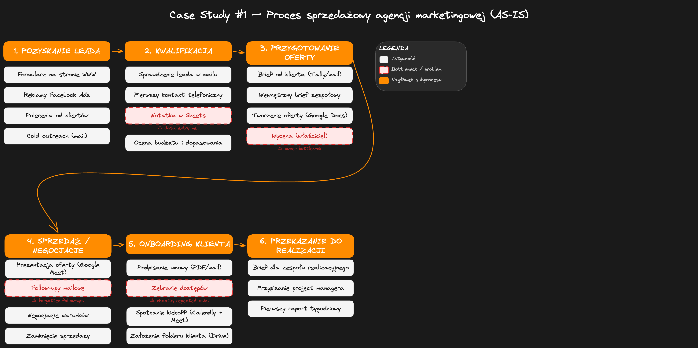
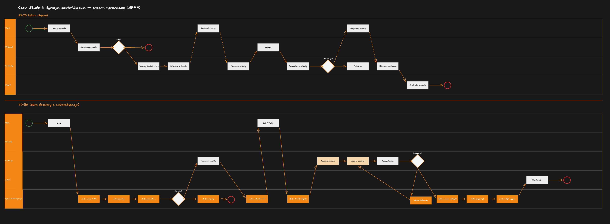
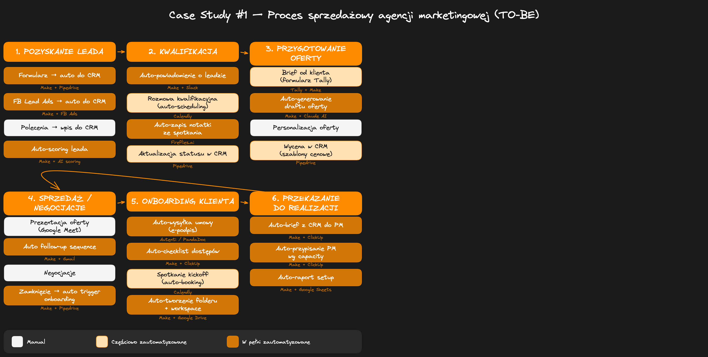

Kontekst
Firma: agencja marketingowa „BrandUp" (nazwa zmieniona), działa na rynku od 6 lat.
Zespół: ~15 osób — właściciel (Marek), 2 handlowców, project manager, 4 specjalistów od social media, 2 specjalistów performance marketing, grafik, copywriter, specjalista SEO, asystentka biura.
Usługi:
- Prowadzenie social media (Facebook, Instagram, LinkedIn, TikTok)
- Kampanie performance (Meta Ads, Google Ads)
- Content marketing (blog, newsletter, materiały wideo)
- SEO i optymalizacja stron
Klienci: głównie firmy B2B i e-commerce, 20-30 aktywnych klientów jednocześnie, średnia wartość kontraktu 4-8 tys. zł/msc.
Główne problemy, z którymi przyszedł właściciel
- Leady „wpadają w dziury" — nikt nie wie, ile jest otwartych zapytań i na jakim są etapie
- Przygotowanie oferty trwa 3-5 dni roboczych (a powinno 1-2)
- Follow-upy są zapominane — handlowcy „tracą" klientów po wysłaniu oferty
- Onboarding nowego klienta to chaos — brakujące dostępy, powtarzane pytania, niejasna odpowiedzialność
- Właściciel nie ma wglądu w pipeline sprzedażowy bez pytania każdego handlowca z osobna
- Pipedrive jest „niby wdrożony", ale nikt go nie uzupełnia — dane są niekompletne i nieaktualne
Proces AS-IS — opis słowny
Poniżej opis procesu tak, jak opowiedział go właściciel agencji na spotkaniu mapującym. Celowo zostawiono chaotyczną narrację — tak to wygląda w rzeczywistości, zanim uporządkujemy informacje.
No więc leady przychodzą z różnych miejsc. Mamy formularz na stronie, ale szczerze — większość przychodzi z poleceń. Ktoś do kogoś zagada, tamten pisze na maila albo na Messengera. Czasem wpada coś z Facebooka, bo Kasia puszcza kampanie leadowe, ale to też ląduje na różnych mailach — raz na info@, raz na mój prywatny, raz Kasia dostaje bezpośrednio.
Jak już wpadnie lead, to w teorii powinien go ogarnąć Tomek albo Ania — to są nasi handlowcy. Ale nie ma jasnej zasady, kto bierze który. Czasem ja sam odpisuję, bo widzę maila pierwszy. Czasem lead leży 2-3 dni, bo każdy myśli, że ktoś inny się zajął.
Potem — jeśli już nawiążemy kontakt — umawiamy rozmowę. Tomek używa Calendly, Ania wysyła proponowane terminy mailem. Na rozmowie pytamy, czego klient potrzebuje, jaki ma budżet, jakie ma konta reklamowe, co robił do tej pory. Ale nie mamy jednego zestawu pytań — każdy pyta o co inny.
Z tej rozmowy powinien powstać brief. Tomek pisze briefy w Google Docs, Ania robi notatki w zeszycie i potem czasem wrzuca do Docs, a czasem nie. Brief idzie do mnie — bo ja muszę wycenić. I tu jest wąskie gardło, bo ja mam milion rzeczy na głowie. Oferta czeka u mnie 2-3 dni zanim siądę i wycenię.
Jak już wycenię, to handlowiec składa ofertę. Mamy jakieś szablony w Google Docs, ale każdy ma swoją wersję. Tomek robi ładniejsze oferty, Ania szybsze. Grafik czasem robi custom okładkę, jak klient jest duży. Ofertę wysyłamy PDFem na maila.
Po wysłaniu oferty — no i tu jest dramat. Nie mamy żadnego systemu follow-upów. Tomek ma karteczki na biurku. Ania ustawia sobie przypomnienia w telefonie. Ja czasem pytam „hej, co z tym leadem od firmy X?", a oni mówią „a, zapomniałem odezwać się". Tracimy przez to klientów, jestem pewien.
Jak klient mówi „tak" — to dopiero się zaczyna zabawa. Ania albo Tomek wysyła mu umowę (mamy szablon w Google Docs, uzupełniamy ręcznie dane firmy). Klient podpisuje, odsyła skan — albo czasem tylko pisze „ok" na mailu i podpisanie się ciągnie.
Potem potrzebujemy dostępów — do kont reklamowych, do social media, do Google Analytics. I tu się zaczyna ping-pong mailowy. „Proszę o dostęp do Managera Reklam." „Co to jest Manager Reklam?" „Proszę nadać nam rolę reklamodawcy na stronie..." — to potrafi trwać 2 tygodnie.
W międzyczasie powinien być kickoff meeting — ja, handlowiec i project manager siadamy z klientem i omawiamy szczegóły współpracy. Ale często kickoff się odwleka, bo czekamy na dostępy. A już powinniśmy działać, bo klient się niecierpliwi.
Na końcu — jak już wszystko mamy — handlowiec przekazuje projekt project managerowi. Ale ta „przekazka" to jest mail albo wiadomość na Slacku w stylu „hej Magda, nowy klient, Firma Y, masz brief w Docs gdzieś, ogarniasz?". Magda potem szuka informacji po mailach, dopytuje, gubi czas. I klient już na starcie ma wrażenie, że jesteśmy niezorganizowani.
Pipedrive mamy — ale szczerze, używamy go na 10%. Tomek czasem coś tam wpisuje, Ania w ogóle nie. Ja zaglądam raz na tydzień i widzę nieaktualne dane. Więc i tak muszę pytać każdego z osobna, co się dzieje.

Proces AS-IS — tabela czynności
1. Pozyskanie leada
| # | Czynność | Kto | Czas | Narzędzia | Output |
|---|---|---|---|---|---|
| 1.1 | Lead wpływa z formularza na stronie | — (auto) | — | Formularz WP, Gmail | Email na info@ |
| 1.2 | Lead wpływa z kampanii Facebook Ads | Kasia | — | FB Ads Manager, Gmail | Powiadomienie do różnych osób |
| 1.3 | Lead z polecenia — mail/Messenger | Różne osoby | — | Gmail, Messenger, telefon | Wiadomość do obsługi |
| 1.4 | Ręczne wpisanie leada do Pipedrive (jeśli ktoś pamięta) | Handlowiec | 5 min | Pipedrive | Karta w Pipedrive (często pomijane) |
2. Kwalifikacja
| # | Czynność | Kto | Czas | Narzędzia | Output |
|---|---|---|---|---|---|
| 2.1 | Przydzielenie leada do handlowca (nieformalnie — „kto pierwszy zobaczy") | Marek / handlowiec | 5-30 min | Gmail, Slack | Handlowiec wie, że ma nowy lead |
| 2.2 | Pierwszy kontakt — odpowiedź, umówienie rozmowy | Handlowiec | 15-30 min | Gmail, Calendly (tylko Tomek) | Umówiony termin rozmowy |
| 2.3 | Rozmowa kwalifikacyjna (telefon / Google Meet) | Handlowiec | 30-45 min | Meet, telefon, Google Docs | Notatki (różne formaty) |
3. Przygotowanie oferty
| # | Czynność | Kto | Czas | Narzędzia | Output |
|---|---|---|---|---|---|
| 3.1 | Spisanie briefu klienta po rozmowie | Handlowiec | 20-40 min | Google Docs / zeszyt | Brief w Docs (lub brak) |
| 3.2 | Przekazanie briefu do właściciela do wyceny | Handlowiec | 5 min | Slack / Gmail | Wiadomość do Marka |
| 3.3 | Wycena usług (wąskie gardło) | Marek | 30 min pracy, 2-3 dni oczekiwania | Google Sheets, głowa | Wycena |
| 3.4 | Stworzenie oferty (kopiowanie z poprzednich) | Handlowiec | 1-2 h | Docs, Canva, Drive | Oferta PDF |
| 3.5 | Wysłanie oferty do klienta | Handlowiec | 10 min | Gmail | Mail z ofertą |
4. Sprzedaż / negocjacje
| # | Czynność | Kto | Czas | Narzędzia | Output |
|---|---|---|---|---|---|
| 4.1 | Follow-up po wysłaniu oferty (jeśli ktoś pamięta) | Handlowiec | 10 min | Gmail | Mail follow-up |
| 4.2 | Rozmowy negocjacyjne | Handlowiec + Marek | 30-60 min | Meet, telefon | Uzgodnione warunki |
| 4.3 | Aktualizacja oferty po negocjacjach | Handlowiec | 30-60 min | Google Docs | Zaktualizowana oferta |
5. Onboarding klienta
| # | Czynność | Kto | Czas | Narzędzia | Output |
|---|---|---|---|---|---|
| 5.1 | Przygotowanie i wysłanie umowy | Handlowiec | 30-45 min | Docs (szablon), Gmail | Umowa do podpisu |
| 5.2 | Podpisanie umowy (ping-pong, skany) | Handlowiec + klient | 15 min, 3-7 dni oczekiwania | Gmail, skaner | Podpisana umowa |
| 5.3 | Zbieranie dostępów (konta reklamowe, social, Analytics) | Handlowiec / PM | 30 min, 1-2 tyg. ping-pongu | Gmail, Slack | Dostępy |
| 5.4 | Kickoff meeting z klientem | Handlowiec + PM + Marek | 45-60 min | Google Meet | Notatki, plan |
| 5.5 | Przekazanie z handlowca do PM | Handlowiec → PM | 15-30 min | Slack, Gmail | PM przejmuje klienta |
6. Przekazanie do realizacji
| # | Czynność | Kto | Czas | Narzędzia | Output |
|---|---|---|---|---|---|
| 6.1 | Założenie projektu klienta (folder, kanał Slack) | PM | 20-30 min | Drive, Slack | Folder + kanał |
| 6.2 | Briefowanie zespołu realizacyjnego | PM | 30-45 min | Slack, Meet | Zespół wie co robić |

Wąskie gardła i problemy
Leady i kwalifikacja
- Brak jednego miejsca na leady — wpadają na różne maile, Messengera, telefon. Nikt nie ma pełnego obrazu.
- Brak zasad przydzielania leadów — „kto pierwszy zobaczy" to nie system. Leady leżą bez odpowiedzi 2-3 dni.
- Brak standardowych pytań kwalifikacyjnych — każdy handlowiec pyta o co innego, briefy są niekompletne.
- Pipedrive nieużywany — dane są niekompletne i nieaktualne, więc nikt na nie nie patrzy (błędne koło).
Ofertowanie
- Właściciel jako wąskie gardło wyceny — każda oferta musi przejść przez Marka, który ma 2-3 dni opóźnienia.
- Tworzenie oferty trwa za długo — kopiowanie ze starych ofert, ręczne uzupełnianie, brak jednego szablonu.
- Brak wersjonowania ofert — po negocjacjach trudno znaleźć, która wersja jest finalna.
Follow-up i sprzedaż
- Follow-upy zapominane — brak systemu przypomnień, handlowcy polegają na pamięci.
- Brak widoczności pipeline'u — właściciel nie wie, ile jest otwartych ofert i na jakim są etapie.
- Brak mierzenia konwersji — nikt nie wie, jaki % leadów zamienia się w klientów ani gdzie ich tracimy.
Onboarding
- Zbieranie dostępów to koszmar — ping-pong mailowy 1-2 tygodnie, bo klient nie wie jak nadać dostępy.
- Brak checklisty onboardingowej — za każdym razem „wymyślamy" co trzeba zebrać.
- Przekazka handlowiec → PM jest chaotyczna — informacje rozproszone po mailach, Slacku, Docs.
- Klient powtarza informacje — mówi to samo na rozmowie kwalifikacyjnej, potem na kickoffie.
Ogólne
- Za dużo narzędzi, za mało procesów — Gmail, Slack, Docs, Sheets, Pipedrive, Calendly, Canva — żadne nie jest połączone.
- Zero automatyzacji — wszystko ręczne, łącznie z przepisywaniem danych między narzędziami.
- Brak standaryzacji — każdy handlowiec ma swój sposób pracy, co uniemożliwia skalowanie.
Elementy do automatyzacji (AS-IS → TO-BE)
| # | Czynność | Typ | Jak zautomatyzować | Narzędzia TO-BE |
|---|---|---|---|---|
| 1.1-1.3 | Zbieranie leadów z różnych źródeł w jedno miejsce | A | Wszystkie formularze podpięte do jednego CRM. Każdy lead automatycznie do Pipedrive z tagiem źródła. | Make/Zapier + Pipedrive + FB Lead Ads |
| 1.4 | Wpisywanie leada do CRM | A | Eliminujemy ręczne wpisywanie — automatyczny wpływ. | Pipedrive (automatycznie) |
| 2.1 | Przydzielanie leada do handlowca | A | Round-robin lub reguły (SEO → Tomek, social → Ania). Powiadomienie na Slacku. | Pipedrive + Slack |
| 2.2 | Pierwszy kontakt i umówienie rozmowy | PA | Automatyczny mail powitalny z linkiem do Calendly natychmiast po wpłynięciu leada. | Make + Pipedrive + Calendly |
| 2.3 | Rozmowa kwalifikacyjna | M | Standardowy zestaw pytań w formularzu, automatyczna transkrypcja rozmowy. | Meet + Fireflies/Fathom + Tally |
| 3.1 | Spisanie briefu | PA | AI generuje brief z transkrypcji + formularza. Handlowiec uzupełnia. | Fireflies + ChatGPT/Claude + Docs |
| 3.2 | Przekazanie briefu do wyceny | A | Powiadomienie do Marka gdy brief gotowy (zmiana statusu w Pipedrive triggeruje Slack + mail). | Pipedrive + Make + Slack |
| 3.3 | Wycena usług | PA | Kalkulator wyceny — handlowiec wybiera usługi, cena wylicza się automatycznie. Marek zatwierdza tylko niestandardowe. | Sheets/Airtable + Make |
| 3.4 | Tworzenie oferty | PA | Szablon uzupełniany automatycznie danymi z CRM i kalkulatora. Handlowiec dostosowuje treść. | Google Docs (szablon) + Make |
| 3.5 | Wysłanie oferty | PA | Oferta jako PDF wysłana z CRM. Tracking otwarć maila. | Pipedrive (email tracking) |
| 4.1 | Follow-up po ofercie | A | Automatyczna sekwencja: po 3, 7 i 14 dniach. Otwarcie oferty → powiadomienie do handlowca. | Pipedrive (sekwencje) / Make |
| 4.2 | Negocjacje | M | Wymaga relacji. Status i notatki wpisywane do CRM (nawyk). | Pipedrive |
| 4.3 | Aktualizacja oferty | PA | Edycja w szablonie, automatyczne przeliczenie cen. | Docs + kalkulator |
| 5.1 | Przygotowanie umowy | A | Szablon uzupełniany automatycznie z Pipedrive. Wysyłka przez e-podpis. | Pipedrive + Autenti/PandaDoc |
| 5.2 | Podpisanie umowy | PA | E-podpis zamiast skanów. Status w CRM aktualizuje się automatycznie. | Autenti/PandaDoc + Pipedrive |
| 5.3 | Zbieranie dostępów | PA | Checklist onboardingowy z instrukcjami krok po kroku. Automatyczne remindery. | Tally + Make + Pipedrive |
| 5.4 | Kickoff meeting | PA | Zaproszenie po podpisaniu umowy. Agenda generowana z briefu. | Calendly + Make + Docs |
| 5.5 | Przekazanie do PM | A | Po zamknięciu deala — automatyczne tworzenie projektu (folder, kanał, karta), PM dostaje powiadomienie. | Pipedrive + Make + Drive + Slack + Asana/ClickUp |
| 6.1-6.2 | Setup projektu i briefowanie zespołu | PA | Automatyczne tworzenie struktury. Brief z CRM. PM tylko briefuje. | Make + Drive + Slack + Asana |
